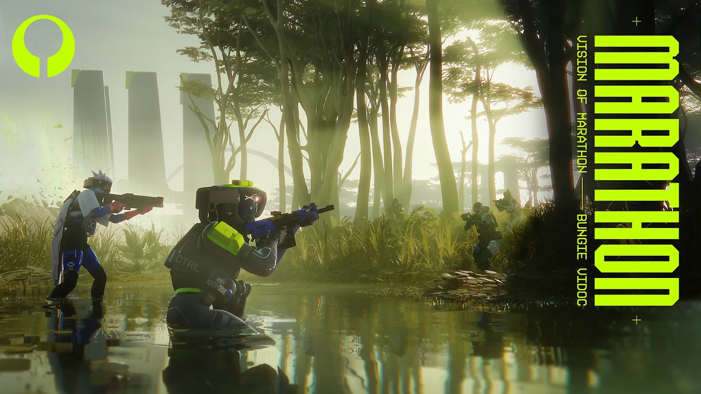
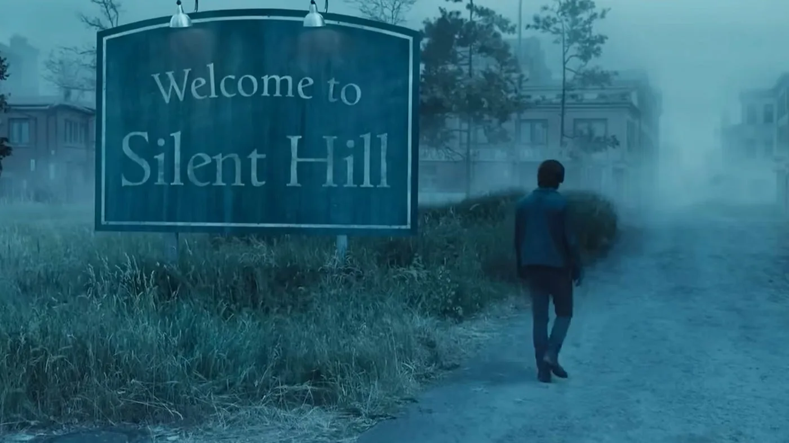

Castlevania cumple 40 años y Konami regala el juego original para celulares
La histórica franquicia de Konami celebra cuatro décadas y la compañía inició una serie de actividades especiales. El Castlevania original de 1986 puede descargarse gratis en iOS y Android hasta el 24 de octubre, mientras que también hay descuentos de hasta el 80% y nuevas actividades vinculadas a la celebración.

25 de septiembre de 2026Bungie cambia el rumbo de Marathon: prepara un modo PvE permanente y abandona el calendario estacional rígido
Bungie anunció una importante modificación en los planes de Marathon. El estudio quiere ampliar la propuesta más allá del extraction shooter tradicional con una experiencia PvE permanente, un nuevo espacio social, una zona Perimeter renovada y otros cambios que llegarán entre octubre y diciembre.
 25 de septiembre de 2026
25 de septiembre de 2026
Armed Fantasia, el sucesor espiritual de Wild Arms, fue cancelado tras cuatro años de desarrollo
El RPG financiado mediante Kickstarter y creado por varios veteranos de Wild Arms fue oficialmente discontinuado por Digital Bros, compañía matriz de 505 Games. La empresa señaló cambios en las condiciones del mercado, múltiples revisiones del gameplay y la inversión adicional necesaria para completar el proyecto.
24 de septiembre de 2026Forza Horizon 6 aclara su sistema de moderación tras la polémica por los baneos de autos decorados con anime
En medio de nuevas denuncias de jugadores japoneses que aseguran haber sido sancionados por sus diseños itasha, Forza Horizon 6 actualizó su Código de Conducta para explicar cómo funciona el sistema de moderación. Xbox asegura que las denuncias son revisadas por personas y que la cantidad de reportes no determina un baneo.
 24 de septiembre de 2026
24 de septiembre de 2026
Meta presenta sus nuevos lentes de realidad virtual con pantalla 5K y ultra livianas
Durante Meta Connect 2026, la compañía presentó Meta VR Glasses, un dispositivo de realidad virtual que busca reducir drásticamente el peso de los visores tradicionales. Con apenas unos 100 gramos, incorpora una pantalla micro-OLED 5K, seguimiento ocular y control mediante gestos, aunque su lanzamiento todavía está previsto para 2027.
 24 de septiembre de 2026
24 de septiembre de 2026
Wo Long 2: Wings of Ember explica por qué abandonó los niveles cerrados del primer juego
Team NINJA explicó durante Tokyo Game Show 2026 las razones detrás de uno de los mayores cambios de Wo Long 2: Wings of Ember: el paso a un diseño de campo abierto. El estudio asegura que busca dar mayor libertad al jugador y solucionar algunas de las críticas que recibió el sistema de exploración del primer juego.
24 de septiembre de 2026Danganronpa 2×2 presenta oficialmente a “John Danganronpa”
Spike Chunsoft reveló la identidad del personaje que había llamado la atención de los fanáticos desde el último tráiler. Se trata de Sakutaro Higashi, el misterioso “Ultimate ???”, que tendrá un papel dentro de Slayhem Mode, el nuevo escenario que expandirá la historia de Danganronpa 2: Goodbye Despair.
23 de septiembre de 2026Tim Schafer no entiende por qué la crisis de la industria sigue sin terminar: “Asumo que alguien está siendo codicioso”
El fundador de Double Fine cuestionó la situación laboral que atraviesa la industria del videojuego y aseguró que lleva alrededor de cuatro años sin ver una recuperación clara. Aunque reconoce que los jugadores siguen consumiendo videojuegos y que el sector continúa generando dinero, no encuentra una explicación para la persistencia de los despidos.

23 de septiembre de 2026El productor de la nueva Resident Evil estaría trabajando en una nueva película de Silent Hill
Roy Lee, productor de la exitosa adaptación de Resident Evil dirigida por Zach Cregger, estaría involucrado en un nuevo proyecto cinematográfico de Silent Hill. La información surge de un perfil publicado por The Wall Street Journal, aunque todavía no hay confirmación oficial.